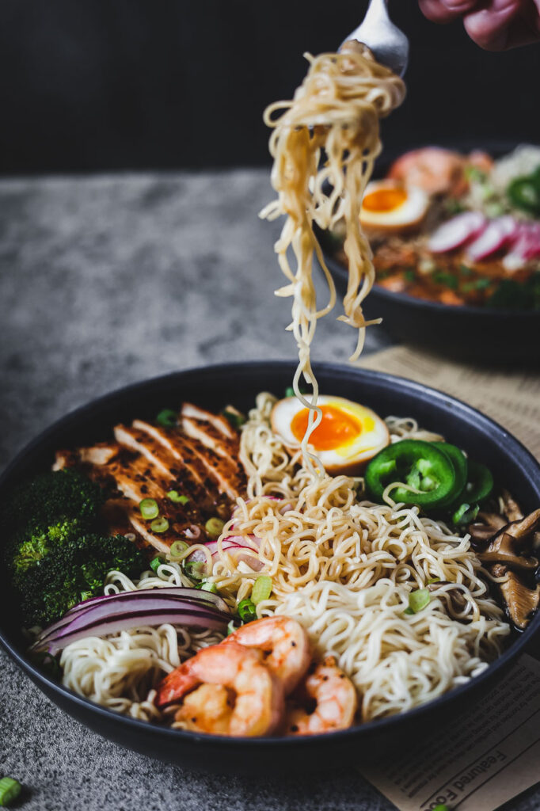

Ramen is a Chinese noodle dish popularized in Japan. It includes Chinese-style wheat noodles served n several flavors of broth. Common flavors are soy sauce and miso, with toppings including sliced pork, nori which is dried seaweed and bamboo shoots and scallions. Nearly every region of Japan has its own variation now such as tonkotsu(pork bone broth) ramen of Kyushu and the miso ramen of Hokkaido. The recipe I'll be writing below will be one of many.
Ingredients needed
Directions
Heat a bit of oil in a pot and stir-fry minced garlic and ginger until fragrant.
Add chicken broth and a few dried shiitake mushrooms. Let it simmer for rich umami flavor.
Toss in your ramen noodles and sliced scallions. Let them cook directly in the broth.
Stir in thinly sliced kale, carrots, or any veggies you love. Cook until just tender.
Pour into bowls and top with a soft-boiled egg, panko crumbs, chili oil, soy sauce, and anything else you love!
Thank You for the Recipe to Lindsay on pinchofyum